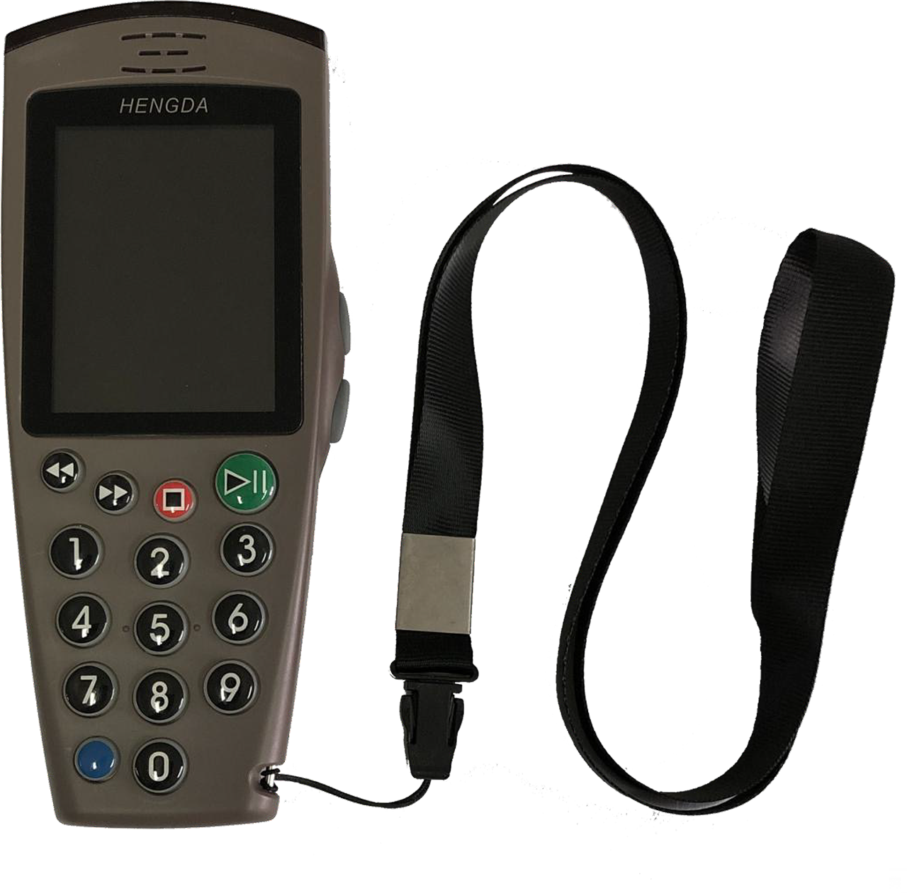
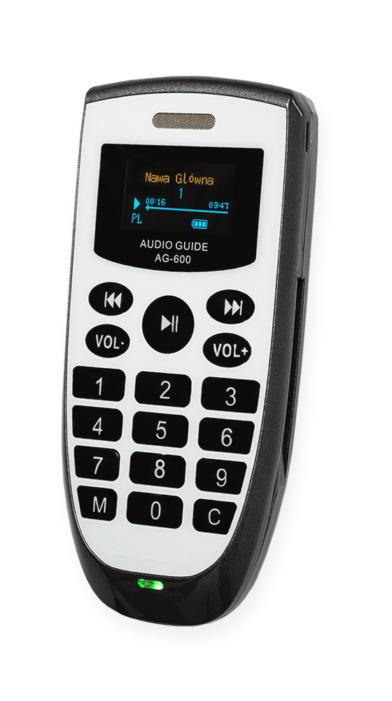
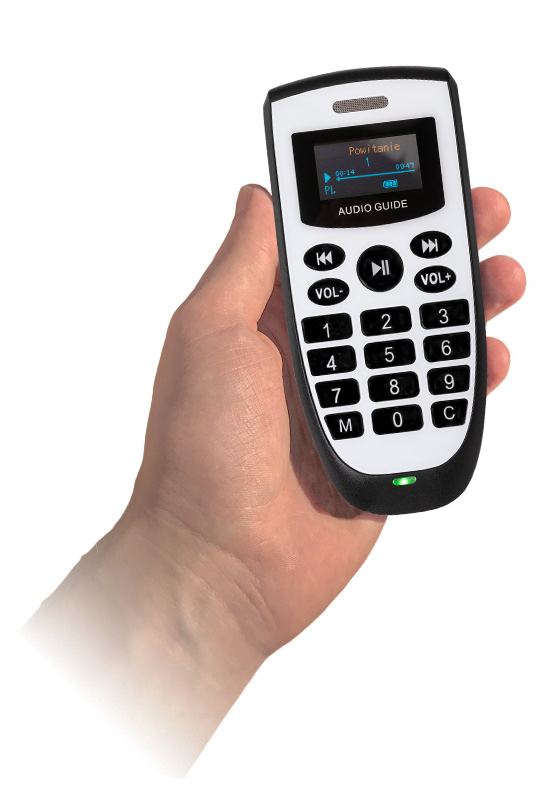

Audioprzewodnik G7 przeznaczony jest do zwiedzania obiektów zamkniętych oraz przestrzeni otwartych. Może działać w dwóch trybach:
- tryb automatyczny - urządzenie automatycznie uruchamia nagrania po wejściu do sali
- klawiatura numeryczna - użytkownik samodzielnie uruchamia nagragnia przez wybór odpowiedniego numeru na klawiaturze urządzenia
- tryb manualny - zwiedzający samodzielnie uruchamia nagrania po skierowaniu urządzenia na interesujący go eksponat zaopatrzony w odpowiedni nadajnik IR, lub etykietę NFC. (nadajniki i etykiety sprzedawane oddzielnie)
Zwiedzający może używać urządzenia podobnie jak pilota do telewizora, wskazując na znacznik z symbolem słuchawek (technologia IR). Znaczniki NFC działają z kolei jak płatność zbliżeniowa kartą - zwiedzający przykłada urządzenie do wyznaczonego miejsca na ekspozycji.
Audioprzewodnik AG-600 przeznaczony jest do zwiedzania obiektów zamkniętych oraz przestrzeni otwartych. Może działać w dwóch trybach:
- tryb automatyczny – w tym trybie audioprzewodnik lokalizuje aktualne położenie zwiedzającego i automatycznie rozpoczyna odtwarzanie odpowiedniego nagrania. Nagranie uruchamiane jest za pomocą specjalnego znacznika radiowego. Znaczniki radiowe są zasilane bateryjnie (powszechnie dostępne baterie typu AA) lub prądem (wedle wyboru).
- tryb ręczny – pozwala zwiedzającemu samodzielnie uruchamiać nagrania w następujące trzy sposoby:
Tryb automatyczny i ręczny można oczywiście połączyć. Wtedy w wybranych miejscach (np. salach) nagrania będą uruchamiać się automatycznie, a po ich wysłuchaniu zwiedzający będzie mógł przejść w tryb ręczny. W każdym momencie zwiedzający może wstrzymać nagranie, lub przewinąć je wstecz lub w przód.
Audioprzewodnik AG 600c przeznaczony jest do zwiedzania obiektów zamkniętych oraz przestrzeni otwartych. Może działać w dwóch trybach:
- klawiatura numeryczna - użytkownik samodzielnie uruchamia nagragnia przez wybór odpowiedniego numeru na klawiaturze urządzenia
- tryb podczerwień - zwiedzający samodzielnie uruchamia nagrania po skierowaniu urządzenia na interesujący go eksponat zaopatrzony w odpowiedni nadajnik IR. (sprzedawany oddzielnie)
Zwiedzający może używać urządzenia podobnie jak pilota do telewizora, wskazując na znacznik z symbolem słuchawek (technologia IR). Dodatkowo urządzenie umożliwia przewijanie wstecz i do przodu.
Pozwala na synchronizacje ścieżek dźwiękowych nagranych na audioprzewodnikach z urządzeniami multimedialnymi umieszczonymi na ekspozycji (tj. kioski multimedialne, telewizory, projektory itp.). Dzięki niemu zwiedzający zawsze słyszy ścieżkę dźwiękową w odpowiednim języku i odpowiednim miejscu ścieżki dźwiękowej.
Typowym zastosowaniem synchronizatora jest udostępnianie ścieżek dźwiękowych prezentacji multimodalnych (np. filmów) zwiedzającym w języku wybranym przez nich na początku wycieczki. Może to się dobywać na dwa sposoby:
Po wejściu w zasięg znacznika (np. sala ekspozycyjna) synchronizator uruchomi zwiedzającemu ścieżkę dźwiękową prezentacji multimedialnej (np. filmu) wyświetlanej w tym miejscu. Ścieżka dźwiękowa przewinie się do odpowiedniego miejsca i otworzy w języku wybranym przez zwiedzającego na początku zwiedzania.
Ścieżka dźwiękowa prezentacji (np. do filmu) nie włączy się automatycznie. Zwiedzający musi najpierw skierować audioprzewodnik na synchronizator (działa podobne do pilota do telewizora). Dopiero wtedy ścieżka dźwiękowa przewinie się do odpowiedniego miejsca i otworzy w języku wybranym przez zwiedzającego na początku zwiedzania.
- Ładowanie urządzeń - Ładowarka na 12 urządzeń.
- Funkcja aktualizatora - Aktualizator na 12 urządzeń z możliwości ich jednoczesnego aktualizowania. Dzięki oprogramowania dołączanemu do aktualizatora można samodzielnie wymieniać nagrania na audioprzewodnikach. Intuicyjne oprogramowania umożliwia wymianie nagan w mniej niż 10 minut.